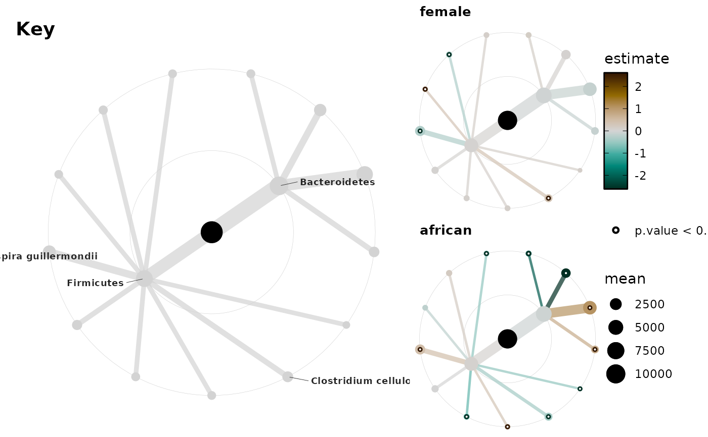

Uses a phyloseq object to make a tree graph structure from the taxonomic table.
Then adds statistical results stored in "taxatree_stats"
taxatree_plotkey plots same layout as taxatree_plots, but in a fixed colour
taxatree_plots( data, colour_stat = "estimate", palette = "Green-Brown", reverse_palette = FALSE, colour_lims = NULL, lum_range = c(10, 85), colour_oob = scales::oob_squish, colour_trans = "abs_sqrt", size_stat = list(prevalence = prev), node_size_range = c(1, 4), edge_width_range = node_size_range * 0.8, size_guide = "legend", size_trans = "identity", sig_stat = "p.value", sig_threshold = 0.05, sig_shape = "circle filled", sig_size = 0.75, sig_colour = "white", edge_alpha = 0.7, vars = "term", var_renamer = identity, title_size = 10, layout = "tree", layout_seed = NA, circular = identical(layout, "tree"), node_sort = NULL, add_circles = isTRUE(circular), drop_ranks = TRUE, colour_na = "grey35" )
| data | ps_extra with taxatree_stats, e.g. output of |
|---|---|
| colour_stat | name of variable to scale colour/fill of nodes and edges |
| palette | diverging hcl colour palette name from |
| reverse_palette | reverse direction of colour palette? |
| colour_lims | limits of colour and fill scale, NULL will infer lims from range of all data |
| lum_range | colour palette luminance range, higher is brighter. 1st value is for both ends of colour scale, 2nd is for the midpoint |
| colour_oob | scales function to handle colour_stat values outside of colour_lims (default simply squishes "out of bounds" values into the given range) |
| colour_trans | name of transformation for colour scale:
default is "abs_sqrt", the square-root of absolute values,
but you can use the name of any transformer from the |
| size_stat | named list of length 1, giving function calculated for each taxon, to determine the size of nodes (and edges). Name used as size legend title. |
| node_size_range | min and max node sizes, decrease to avoid node overlap |
| edge_width_range | min and max edge widths |
| size_guide | guide for node sizes, try "none", "legend" or ggplot2::guide_legend() |
| size_trans | transformation for size scale you can use (the name of) any transformer from the scales package, such as "identity", "log1p", or "sqrt" |
| sig_stat | name of variable indicating statistical significance |
| sig_threshold | value of sig_stat variable indicating statistical significance (below this) |
| sig_shape | fixed shape for significance marker |
| sig_size | fixed size for significance marker |
| sig_colour | fixed colour for significance marker |
| edge_alpha | fixed alpha value for edges |
| vars | name of column indicating terms in models (one plot made per term) |
| var_renamer | function to rename variables for plot titles |
| title_size | font size of title |
| layout | any ggraph layout, default is "tree" |
| layout_seed | any numeric, required if a stochastic igraph layout is named |
| circular | should the layout be circular? |
| node_sort | sort nodes by "increasing" or "decreasing" size? NULL for no sorting.
Use |
| add_circles | add faint concentric circles to plot, behind each rank? |
| drop_ranks | drop ranks from tree if not included in stats dataframe |
| colour_na | colour for NA values in tree. (if unused ranks are not dropped, they will have NA values for colour_stat) |
list of ggraph ggplots
Uses ggraph (see help for main underlying graphing function with ?ggraph::ggraph)
# Limited examples, see website article for more library(dplyr) library(ggplot2) library(patchwork) data(dietswap, package = "microbiome") ps <- dietswap # create some binary variables for easy visualisation ps <- ps %>% ps_mutate( female = if_else(sex == "female", 1, 0, NaN), african = if_else(nationality == "AFR", 1, 0, NaN) ) # This example dataset has some taxa with the same name for phylum and family... # We can fix problems like this with the tax_prepend_ranks function # (This will always happen with Actinobacteria!) ps <- tax_prepend_ranks(ps) # filter out rare taxa ps <- ps %>% tax_filter( min_prevalence = 0.5, prev_detection_threshold = 100 ) #> Proportional min_prevalence given: 0.5 --> min 111/222 samples. # delete the Family rank as we will not use it for this small example # this is necessary as taxatree_plots can only plot consecutive ranks ps <- ps %>% tax_mutate(Family = NULL) # specify variables used for modelling models <- taxatree_models( ps = ps, type = corncob::bbdml, ranks = c("Phylum", "Genus"), formula = ~ female + african, verbose = TRUE ) #> 2021-11-01 10:33:20 - modelling at rank: Phylum #> Modelling: P: Bacteroidetes #> Modelling: P: Firmicutes #> 2021-11-01 10:33:20 - modelling at rank: Genus #> Modelling: G: Allistipes et rel. #> Modelling: G: Bacteroides vulgatus et rel. #> Modelling: G: Butyrivibrio crossotus et rel. #> Modelling: G: Clostridium cellulosi et rel. #> Modelling: G: Clostridium orbiscindens et rel. #> Modelling: G: Clostridium symbiosum et rel. #> Modelling: G: Faecalibacterium prausnitzii et rel. #> Modelling: G: Oscillospira guillermondii et rel. #> Modelling: G: Prevotella melaninogenica et rel. #> Modelling: G: Prevotella oralis et rel. #> Modelling: G: Ruminococcus obeum et rel. #> Modelling: G: Sporobacter termitidis et rel. #> Modelling: G: Subdoligranulum variable at rel. # models list stored as attachment in ps_extra models #> ps_extra object - a list with phyloseq and extras: #> #> phyloseq-class experiment-level object #> otu_table() OTU Table: [ 13 taxa and 222 samples ] #> sample_data() Sample Data: [ 222 samples by 10 sample variables ] #> tax_table() Taxonomy Table: [ 13 taxa by 2 taxonomic ranks ] #> #> ps_extra info: #> tax_agg = NA tax_transform = NA #> #> $taxatree_models list: #> Ranks: Phylum/Genus # get stats from models stats <- taxatree_models2stats(models, param = "mu") stats #> ps_extra object - a list with phyloseq and extras: #> #> phyloseq-class experiment-level object #> otu_table() OTU Table: [ 13 taxa and 222 samples ] #> sample_data() Sample Data: [ 222 samples by 10 sample variables ] #> tax_table() Taxonomy Table: [ 13 taxa by 2 taxonomic ranks ] #> #> ps_extra info: #> tax_agg = NA tax_transform = NA #> #> $taxatree_stats dataframe: #> 15 taxa at 2 ranks: Phylum, Genus #> 2 terms: female, african plots <- taxatree_plots( data = stats, colour_trans = "identity", size_stat = list(mean = mean), size_guide = "legend", node_size_range = c(1, 6) ) # if you change the size_stat for the plots, do the same for the key!! key <- taxatree_plotkey( data = stats, rank == "Phylum" | p.value < 0.05, # labelling criteria .combine_label = all, # label only taxa where criteria met for both plots size_stat = list(mean = mean), node_size_range = c(2, 7), size_guide = "none", taxon_renamer = function(x) { stringr::str_remove_all(x, "[PG]: | [ae]t rel.") } ) # cowplot is powerful for arranging trees and key and colourbar legend legend <- cowplot::get_legend(plots[[1]]) plot_col <- cowplot::plot_grid( plots[[1]] + theme(legend.position = "none"), plots[[2]] + theme(legend.position = "none"), ncol = 1 ) cowplot::plot_grid(key, plot_col, legend, nrow = 1, rel_widths = c(4, 2, 1)) 